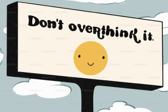
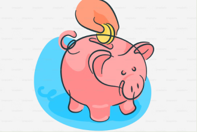

why would banks pay me?
Banks are hoping you’ll stick around and use their services. By offering a cash bonus, they’re betting that they’ll earn more over time. It’s like a “welcome mat”: they invest upfront to win you as a long-term customer.
Banks are hoping you’ll stick around and use their services. By offering a cash bonus, they’re betting that they’ll earn more over time. It’s like a “welcome mat”: they invest upfront to win you as a long-term customer.

Mostly, yes. CASS handles the switching safely and automatically. You may need to set up direct debits or keep the account open a few months, but nothing is difficult if you stay organised.
Typically £100–£200. It’s free money for following simple steps. Once you’ve claimed a bonus, you probably won’t be eligible again with the same bank for a while — so treat it as a one-off win.
